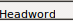
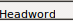
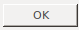
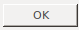

### In examples because it's not a concrete test yet.
# To be filled in: [word], [picture of word in list],
# [picture we're comparing it to]
from sikuli import *
import sys
sys.path.insert(0, '/home/vagrant/linux_setup/sikuli/examples')
from test_helper import TestHelper
helper = TestHelper("check_lexicon_entry_change")
# Opening
###############
helper.Click(, "Couldn't find 'Lexicon' button")
LEFT_SIDEBAR.Click( , "Couldn't find 'Lexicon Edit' button")
helper.Click(Pattern().targetOffset(47,24), "'Headword' column not found")
helper.Click(
, "Couldn't find 'Lexicon Edit' button")
helper.Click(Pattern().targetOffset(47,24), "'Headword' column not found")
helper.Click( , "'Filter for' button not found")
helper.Type(WORD)
# Now the 'Filter for' box is up, so if we can't click something
# we should restart Flex
helper.Click(Pattern(
, "'Filter for' button not found")
helper.Type(WORD)
# Now the 'Filter for' box is up, so if we can't click something
# we should restart Flex
helper.Click(Pattern( ).targetOffset(-42,0), "'Whole item' option not found", restart=True)
helper.Click(, "OK button not found", time=5, restart=True)
# 'Filter for' box is gone now
helper.Click(WORD_PICTURE, "Word not found in list after filter")
# Create a region at the top of the 'Entry' panel
entry_header = helper.Find(,
"'Entry' field not found in right panel")
entry_region = entry_header.below(90)
# Goal
###############
if entry_region.exists(PICTURE_TO_COMPARE):
helper.write_fail("Field looks the same as in provided image")
else:
helper.write_success()
).targetOffset(-42,0), "'Whole item' option not found", restart=True)
helper.Click(, "OK button not found", time=5, restart=True)
# 'Filter for' box is gone now
helper.Click(WORD_PICTURE, "Word not found in list after filter")
# Create a region at the top of the 'Entry' panel
entry_header = helper.Find(,
"'Entry' field not found in right panel")
entry_region = entry_header.below(90)
# Goal
###############
if entry_region.exists(PICTURE_TO_COMPARE):
helper.write_fail("Field looks the same as in provided image")
else:
helper.write_success()